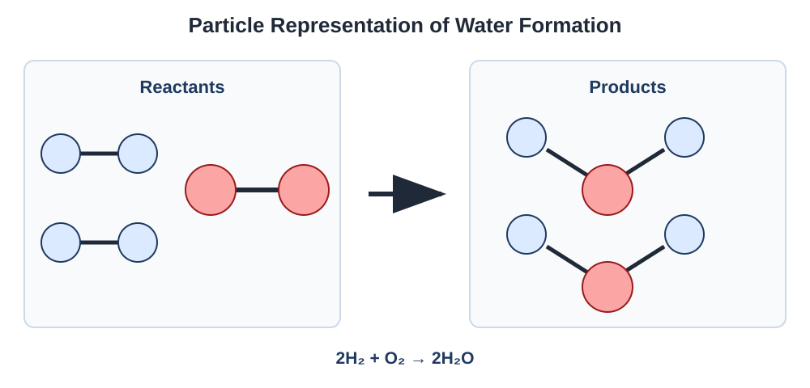
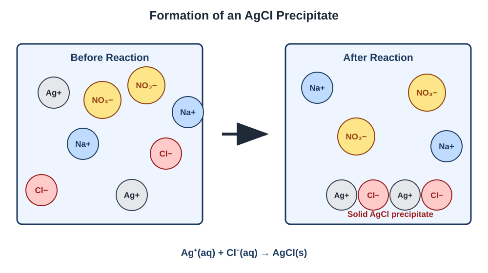

Chemical Reactions
Learn how to represent chemical changes, identify reaction types, calculate reacting quantities, and explain reactions using particles, ions, and electrons.
Topics
Representing Reactions
Balance equations and connect symbolic equations to particle-level representations and observable changes.
Net Ionic Equations
Separate strong electrolytes into ions and identify spectator ions in aqueous reactions.
Stoichiometry and Titration
Use balanced equations to calculate reacting amounts, limiting reactants, yields, and titration results.
Reaction Types
Recognize precipitation, acid–base, and oxidation– reduction reactions.
Representing Chemical Reactions
A chemical reaction rearranges atoms to form different substances. Chemical equations represent the identities and relative amounts of the reactants and products.
Parts of a Chemical Equation
Reactants are the substances present before the reaction. Products are the substances formed by the reaction. An arrow indicates the direction of the chemical change.
| State Symbol | Meaning |
|---|---|
| (s) | Solid |
| (l) | Liquid |
| (g) | Gas |
| (aq) | Dissolved in water |
Coefficients and Subscripts
A coefficient is written before a chemical formula and indicates the relative number of particles or moles. A subscript is part of the chemical formula and indicates the ratio of atoms within a particle.
Example: Coefficient Versus Subscript
The coefficient 2 represents two water molecules. Each molecule contains two hydrogen atoms and one oxygen atom.
Steps for Balancing an Equation
- Write the correct chemical formulas for all reactants and products.
- Count the number of atoms of each element on both sides.
- Add coefficients to make the number of each type of atom equal.
- Reduce the coefficients to the smallest whole-number ratio when possible.
- Check the final atom counts and, for ionic equations, the total charge on both sides.
Example: Formation of Water
The unbalanced equation is:
Place a coefficient of 2 before H₂O to balance oxygen. Then place a coefficient of 2 before H₂ to balance hydrogen.
| Element | Reactant Side | Product Side |
|---|---|---|
| Hydrogen | 4 atoms | 4 atoms |
| Oxygen | 2 atoms | 2 atoms |

Physical and Chemical Changes
A physical change alters a substance’s state, shape, or arrangement without changing the identities of its particles. A chemical change rearranges atoms and forms substances with different chemical identities.
| Physical Change | Chemical Change |
|---|---|
| Melting or freezing | Formation of a precipitate |
| Boiling or condensation | Formation of a gas through reaction |
| Cutting or changing shape | Formation of substances with new chemical identities |
| Dissolving without reaction | Transfer of electrons or rearrangement of bonds |
Evidence of a Chemical Reaction
Observations that may provide evidence of a chemical reaction include:
- Formation of a solid precipitate from aqueous solutions
- Unexpected production of gas
- A lasting color change
- A temperature change caused by the reaction
- Emission of light
Representing Reactions Practice
Try each question before opening its solution.
Question 1: Balancing an Equation
Balance the following equation using the smallest whole-number coefficients:
Show solution
Begin by balancing oxygen. The least common multiple of 2 and 3 is 6, so use 3O₂ and 2Al₂O₃.
The product side now contains four aluminum atoms, so place a coefficient of 4 before aluminum.
Question 2: Interpreting Coefficients
Consider the balanced equation:
If two N₂ molecules react with six H₂ molecules, how many NH₃ molecules can form?
Show solution
The amounts given are twice the coefficients in the balanced equation:
Therefore, four NH₃ molecules can form.
Question 3: Checking Atom Conservation
A student proposes the equation:
Is the equation balanced? If not, provide the balanced equation.
Show solution
The original equation is not balanced. It contains four hydrogen atoms on the reactant side but only two on the product side.
Place a coefficient of 2 before water, then balance oxygen with a coefficient of 2 before O₂:
Question 4: Physical or Chemical Change?
A sample of solid water melts into liquid water. Is this a physical or chemical change? Explain using particle identity.
Show solution
Melting is a physical change. The arrangement and movement of the water molecules change, but every particle remains an H₂O molecule.
No substance with a new chemical identity is formed.
Question 5: Evaluating Evidence
Bubbles appear when a liquid is heated. Does this observation alone prove that a chemical reaction occurred?
Show solution
No. The bubbles could result from a physical change, such as the liquid boiling and entering the gas phase.
More evidence would be needed to show that a gas with a new chemical identity was produced.
Watch: Representing Chemical Reactions
Watch an explanation of balancing equations, coefficients, particle representations, and physical versus chemical changes.
Net Ionic Equations
A net ionic equation shows only the particles that undergo a chemical change during an aqueous reaction. Ions that remain unchanged are called spectator ions and are omitted.
Strong Electrolytes in Ionic Equations
Soluble ionic compounds and strong acids or bases are represented as separated ions when they are dissolved in water.
Substances that are solids, liquids, gases, weak electrolytes, or insoluble compounds are generally kept together in ionic equations.
Spectator Ions
Spectator ions appear in the same form on both sides of a complete ionic equation. They remain dissolved and do not undergo the chemical change represented by the net ionic equation.
Steps for Writing a Net Ionic Equation
- Write and balance the molecular equation.
- Separate strong aqueous electrolytes into their individual ions.
- Keep solids, liquids, gases, and weak electrolytes together.
- Cancel spectator ions that appear unchanged on both sides.
- Confirm that both atoms and total charge are balanced in the final net ionic equation.
Example: Formation of AgCl
Aqueous silver nitrate and sodium chloride react to form solid silver chloride.
Molecular Equation
Complete Ionic Equation
→
AgCl(s) + Na+(aq) + NO3−(aq)
Na+ and NO3− appear unchanged on both sides, so they are spectator ions.
Net Ionic Equation

Checking a Net Ionic Equation
A correct net ionic equation must conserve both atoms and electrical charge. For the formation of AgCl, the total charge on the reactant side is zero, matching the neutral solid product.